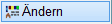
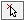
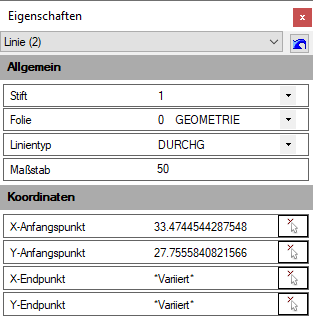
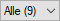
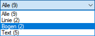

")
")
Ändern der Eigenschaften eines oder mehrerer Zeichenelemente. Öffnet den Dialog Eigenschaften zunächst ohne Inhalte (Dialogbeschreibung siehe weiter unten).
Die Anzahl der gewählten Elemente wird im Dialog nach Elementtypen gruppiert angezeigt. Sind die Elemente vom gleichen Typ, zum Beispiel Linien, können wesentlich mehr Eigenschaften angezeigt werden. Wenn Sie unterschiedliche Elemente auswählen, werden nur die Eigenschaften angezeigt, die gemeinsam geändert werden können. Ist der einzelne Wert unterschiedlich, wird das durch die Angabe "Variiert" erkennbar.
1.Element wählen
§Ziehen Sie einen Rahmen durch das Anklicken von zwei Punkten um die Zeichenelemente oder klicken Sie einzelne Elemente an. [1.Punkt/Element]; [2.Punkt].
Die Zeichenelemente werden markiert und die Elementeigenschaften im Dialog angezeigt.
2.Elementeigenschaften ändern
Wenn Sie mehrere Elemente ausgewählt haben, wird die geänderte Eigenschaft an alle gewählten Elemente weitergegeben.
§Ändern Sie die Eigenschaft, indem Sie in der rechten Spalte die Dropdown-Liste mit  aufklappen und dem Element eine neue Eigenschaft zuweisen.
aufklappen und dem Element eine neue Eigenschaft zuweisen.
Abhängig von der Eigenschaft müssen Werte ggf. per Tastaturangabe geändert werden, z. B. der Maßstab oder der Breitenfaktor von Texten. Klicken Sie den entsprechenden Wert, bewegen Sie die Einfügemarke mit den Pfeiltasten der Tastatur an die entsprechende Stelle und tippen Sie den neuen Wert ein. Mit einem Doppelklick können Sie den gesamten Wert markieren und überschreiben.
§Änderungen werden während der Eingabe sofort übernommen.
§Um das Ändern zu beenden, klicken Sie auf das Schließen-Kreuz in der rechten oberen Dialogecke.
Um Koordinaten zu übernehmen
Sie können die X- und Y-Koordinaten von Linien, Kreisen und Texten manipulieren. Dadurch lassen sich Elementpunkte an bestimmte Koordinaten verschieben, um z. B. Texte mit unterschiedlichen Y-Koordinaten auf eine bestimmte X-Koordinate zu verschieben oder Linienendpunkte an eine bestimme Koordinate zu setzen.
Die linke untere Ecke der Plotfläche stellt den Koordinatenursprung (0/0) dar. Alle Werte beziehen sich auf den Koordinatenursprung.
§Klicken Sie mit der linken Maustaste auf 
Nur innerhalb eines Elementtyps verfügbar (z. B. Linie). Die Eigenschaftenpalette wird geschlossen und in der Eingabezeile wird nach einem Punkt für X bzw. Y gefragt.
§Klicken Sie in der Zeichnung diesen Punkt an.
Die zugehörige geometrische Änderung wird ausgeführt. Die Eigenschaftenpalette wird wieder sichtbar, die abgegriffene Koordinate ist angeschrieben.
Sie können einen Wert auch manuell (über Tastatur) eingeben.
Optionen im Dialog "Eigenschaften"
 |
Hier wird der Elementtyp und in Klammern dahinter die Anzahl der Elemente, die ausgewählt sind, angegeben. |
|
 |
Sind mehr als 1 Element ausgewählt, und differiert der Typ, so wird dies durch die Angabe Alle erkennbar. Sie können eine Liste mit allen in der Auswahl enthaltenen Einzeltypen aufklappen, indem Sie die Zeile mit dem Pfeil (  |
Löscht die aktuelle Anzeige der gewählten Elemente. |
|
|
Öffnet eine Liste der Einzeltypen oder Folien. |
Das Pfeilsymbol hinter einem Eingabewert bedeutet, dass der Wert eines Elements aus der Zeichnung abgegriffen werden kann. Klicken Sie hierzu auf das Pfeilsymbol und anschließend auf ein Element, dessen Wert Sie übernehmen möchten. Mit dieser Funktion können Sie z. B. den X-Endpunkt der markierten Linie auf die Koordinate eines angeklickten Punktes verschieben und die markierte Linie dadurch verlängern oder verkürzen. Ebenfalls lassen sich eigene Werte eingeben. |
|
*Variiert* |
Zeigt an, dass die Werte oder Attribute der angeklickten Elemente nicht übereinstimmen. |
 ) anklicken. In der Liste werden die Einzeltypen mit der zugehörige Anzahl angezeigt. Sie können einen Einzeltyp anklicken (z. B. "Bogen"), um sich nur die Elementeigenschaften von Bögen anzeigen zu lassen.
) anklicken. In der Liste werden die Einzeltypen mit der zugehörige Anzahl angezeigt. Sie können einen Einzeltyp anklicken (z. B. "Bogen"), um sich nur die Elementeigenschaften von Bögen anzeigen zu lassen.
Allgemein
Hier werden Eigenschaften (Folien, Stift etc.) des angeklickten Elementes aufgeführt.
Koordinaten
Es werden, abhängig vom Elementtyp, die Koordinaten angegeben. Sind es X und Y für Anfangs- und Endpunkt bei Linien, so werden beim Bogen (Kreis), Mittelpunkt und Radius aufgeführt.
Siehe auch: